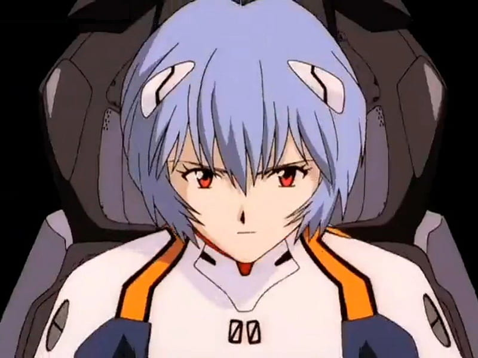
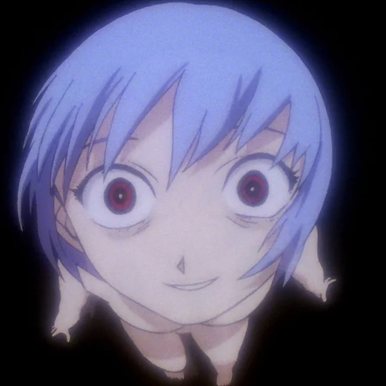
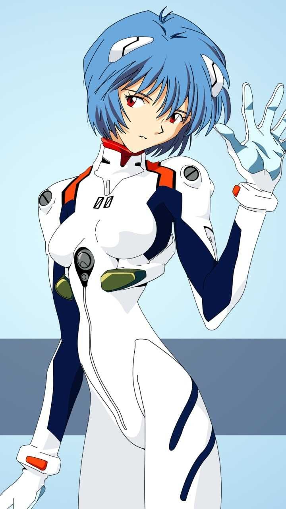
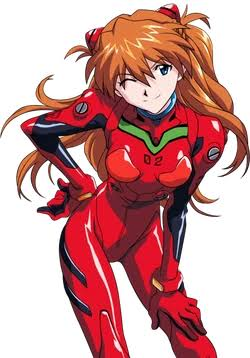

Rei Ayanami: The blue flower of the NERV
Rei Ayanami is the enigmatic First Child and the pilot of Evangelion Unit-00.
Quiet, disciplined, and emotionally reserved, she serves NERV with unwavering dedication while carrying the burden of a mysterious origin.
As the story unfolds, Rei's gradual search for identity, humanity, and connection becomes one of the most profound emotional journeys in Neon Genesis Evangelion, leaving a lasting impact on both the characters around her and audiences worldwide.
Rei Ayanami's Personality Traits
- Stoic and emotionally detached
- Deeply obedient to Gendo Ikari
- Gradually develops genuine emotion through Shinji
- Selfless to the point of self-destruction
- Symbolic of sacrifice, identity, and what it means to be human
- Connected to the fate of all humanity through Third Impact
To know more about her
STATS TABLE
| Attributes | Values |
|---|---|
| Full name | Rei Ayanami |
| Age | 14 |
| Height | 152 cm |
| Weight | 45 kg | Blood Type | A |
| Affiliation | NERV |
| Evalgalion Unit | Eva Unit-00 |
| First Appearance | Neon Genesis Evangelion Episode 1 |
| Voice Actors | Megumi Hayashibara (Japanese), Amanda Winn Lee (English) |
| True nature | Clone of Yui Ikari |
| Personality | Quiet, reserved, and emotionally detached |
Key Appearances
| Episode | Title | Rei's Role | Why It Matters |
|---|---|---|---|
| Episode 01 | Angel Attack | First appearance, badly wounded | Establishes her sacrifice. She pilots while injured so Shinji doesn't have to. |
| Episode 05 | Rei I | First Rei-focused episode | Shinji visits her apartment and glimpses her private life along with her mysterious connection to Gendo. |
| Episode 06 | Rei II | Shields Shinji with Unit-00's bare hands | Her first clear act that goes beyond simple obedience, showing genuine concern for Shinji. |
| Episode 14 | Weaving a Story | Soul synchronization with Shinji during a synchronization test | Rei and Shinji briefly share consciousness, revealing an unsettling yet deeply intimate connection. |
| Episode 23 | Rei III | Absorbs Armisael and sacrifices herself | The third Rei dies and another Rei awakens without memories of Shinji, marking one of the series' most tragic moments. |
| The End of Evangelion | Film | Becomes Lilith and initiates Third Impact | Rei rejects Gendo, places her trust in Shinji, and ultimately merges humanity into the Sea of LCL. |
Key Relationships
- Gendo Ikari
-
Rei obeys Gendo Ikari with absolute loyalty and rarely questions his decisions.
She is willing to sacrifice her own life for his plans and sees her existence as a tool to fulfill his wishes.
In Episode 23, however, she refuses Gendo's command for the first time, choosing her own path instead.
Their unsettling relationship is one of the most mysterious aspects of Neon Genesis Evangelion, driven by secrets rather than clear explanations. - Shinji Ikari
-
At first, Rei shows almost no emotion toward Shinji.
As they spend more time together, she slowly begins to change.
Shinji's visit to her apartment, her first genuine smile, and her growing concern for his well-being mark the beginning of her emotional awakening.
By the end of the series, Rei chooses Shinji over Gendo, proving that she has developed her own sense of identity and free will. - Yui Ikari
-
Rei is unaware of her true connection to Yui Ikari, yet she is deeply linked to her existence.
Rei was created using Yui Ikari's genetic material and carries part of her legacy.
This connection explains why Gendo treats Rei with such unusual importance, as she represents the closest remaining link to the woman he loved. - Lilith
-
Rei serves as the vessel for Lilith, one of the primordial beings central to the mythology of Neon Genesis Evangelion.
During The End of Evangelion, she merges completely with Lilith and becomes the catalyst for Third Impact.
Instead of allowing Gendo to control humanity's fate, Rei chooses Shinji's will and ultimately gives humanity the opportunity to regain its individuality.
This decision marks the culmination of her journey toward becoming truly human.
Key Visuals
|
 |

|
 |
Trivia
- Designed as Asuka's Complete Opposite
-
Rei was designed by character designer Yoshiyuki Sadamoto as a direct contrast to Asuka Langley Soryu.
She is quiet where Asuka is loud, passive where Asuka is aggressive, and emotionally restrained where Asuka openly expresses herself. - Influential Character Design
-
Rei's blue hair and striking red eyes were highly unconventional for anime in 1995.
Her appearance became one of the most influential character designs in anime history and inspired countless characters in later series. - The Meaning of "Rei"
- The name Rei can mean "zero" or "null" in Japanese, reflecting her role as someone who begins the story with almost no personal identity or sense of self.
- Megumi Hayashibara's Performance
-
Voice actress Megumi Hayashibara intentionally delivered Rei's dialogue in a flat, emotionless tone.
She carefully removed emotional expression from her voice to match Rei's detached personality. - Hideaki Anno's Inspiration
- Series creator Hideaki Anno has described Rei as representing the part of himself that wanted to disappear, making her one of the most personal and psychologically symbolic characters in the series.
- A Different Rei in Early Drafts
- Early production drafts portrayed Rei as far more expressive. During development, Hideaki Anno decided to strip away most of her personality, creating the mysterious and emotionally distant character audiences know today.
- Popularity Despite Her Silence
-
Rei consistently ranked first in major anime popularity polls throughout the late 1990s.
Her immense popularity, despite speaking very little and showing almost no emotion, became a cultural phenomenon and highlighted themes of loneliness, mystery, and projection. - Symbolism of the Blue Flower
-
Rei is often associated with the blue flower, a symbol of longing and unattainable ideals.
This symbolism reflects her role as a character who embodies sacrifice, mystery, and the search for identity.
Iconic Quotes
"I am not your mother."
"What do you mean by the word 'heart'?"
"I have nothing. I have nobody, except Commander Ikari."
"I am not afraid to die."
"Pilot the Eva. That is the reason you were born."
Rei Ayanami Timeline
- Creation
- Rei I is created from the genetic material of Yui Ikari and the soul of Lilith. She is not born. She is made.
- Life inside NERV
- Gendo Ikari raises Rei in isolation within NERV headquarters. She knows nothing beyond the organization, Evangelion Unit-00, and Gendo himself.
- The Unit-00 Accident
- During Unit-00's activation experiment, Rei suffers a catastrophic accident but miraculously survives.
- Meeting Shinji
- Shinji Ikari arrives at NERV. Rei attempts to pilot Unit-00 despite her injuries, convincing Shinji to take her place.
- The Apartment Visit
- Shinji visits Rei's apartment and witnesses her lonely existence, discovering Gendo's broken glasses as her only treasured possession.
- The First Smile
- After Operation Yashima, Rei smiles at Shinji for the first time, marking the beginning of her emotional growth.
- Armisael Battle
- Rei absorbs the Angel Armisael and sacrifices herself by destroying Evangelion Unit-00 to protect Shinji.
- Rei Reborn
- Another Rei awakens with no memories of Shinji or her previous experiences.
- Third Impact
- Rei merges with Lilith, rejects Gendo, entrusts humanity's future to Shinji, and dissolves herself during Instrumentality.
Rei Ayanami & Asuka Langley
| Rei Ayanami | Asuka Langley Soryu |
|---|---|
|
 |
 |
|
Rei Ayanami First Child • Pilot of Evangelion Unit-00 |
Asuka Langley Soryu Second Child • Pilot of Evangelion Unit-02 |
Rei Ayanami vs Asuka Langley
| Attribute | Rei Ayanami | Asuka Langley Soryu |
|---|---|---|
| Designation | First Child | Second Child |
| Eva Unit | Unit-00 | Unit-02 |
| Personality | Stoic and detached | Passionate and aggressive |
| Relationship with Shinji | Quietly protective | Initially hostile, later vulnerable |
| Relationship with Gendo | Absolute obedience | Distant and irrelevant |
| Core Wound | No identity | Fear of losing identity |
| Symbolism | Death, rebirth, selflessness | Pride, trauma, survival |
| Hair Color | Blue | Red |
| Eye Color | Red | Blue |
| Japanese Voice | Megumi Hayashibara | Yuko Miyamura |
| Ultimate Fate | Dissolves into LCL | Survives Third Impact |
Important Evangelion Terms
- NERV
- NERV is the organization responsible for the Evangelion Project and humanity's defense against the Angels.
- SEELE
- SEELE is a secret organization whose name means 'Soul' in German.
- EVA
- Evangelion, the biomechanical giant piloted by selected children.
- LCL
- Link Connect Liquid, the breathable orange fluid inside the Entry Plug.
- AT Field
- Absolute Terror Field, the invisible barrier that separates individual souls.
- Third Impact
- Third Impact is the event that merges all human souls together.
- Human Instrumentality Project
- SEELE's plan to force humanity into one unified consciousness.
Evangelion Unit-00
| Attribute | Information |
|---|---|
| Designation | Evangelion Unit-00 Prototype |
| Color | Originally Orange, later Blue and White |
| Soul | Closely connected to Rei Ayanami |
| Unique Ability | Absorbs the Angel Armisael |
| First Activation | Failed catastrophically |
| Weapons | Progressive Knife, Pallet Rifle, Shield |
| Status | Destroyed during Episode 23 |
Recommended Viewing Order
- Neon Genesis Evangelion (Episodes 1-26)
- The main series following the adventures of the Evangelion pilots.
- The End of Evangelion
- The controversial conclusion to the original series.
- Rewatch Episodes 05 and 06
- Episodes that contain important plot developments.
- Evangelion 1.11: You Are (Not) Alone
- A special episode that provides insight into the characters' backstories.
- Evangelion 3.33: You Can (Not) Redo
- The final episode of the original series, concluding the main storyline.
Evangelion Glossary
Important Evangelion Terms
- First Child
- The title given to Rei Ayanami as the first officially recognized Evangelion pilot. Although she is called the "First Child," she is actually one of several cloned bodies created by NERV and plays a central role in the Human Instrumentality Project.
- Evangelion (EVA)
- Evangelions are enormous biomechanical humanoid weapons created by NERV to fight mysterious beings known as Angels. Although they appear to be giant robots, they are actually living organisms covered in mechanical armor that restrains their immense power.
- NERV
- NERV is a secret paramilitary research organization headquartered beneath Tokyo-3. Officially, its purpose is to protect humanity from the Angels using the Evangelions. In reality, it is also carrying out the Human Instrumentality Project under the orders of SEELE.
- SEELE
- SEELE is a mysterious organization that secretly controls NERV from the shadows. Its name means "Soul" in German. SEELE's ultimate goal is to unite all human souls into one collective existence through the Human Instrumentality Project.
- Angel
- Angels are powerful extraterrestrial beings that periodically attack humanity. Each Angel possesses unique abilities and an incredibly strong AT Field, making them extremely difficult to defeat. Their arrival threatens to trigger the extinction of humanity.
- Entry Plug
- The Entry Plug is the cockpit inserted into the spine of an Evangelion. It is filled with LCL fluid, allowing the pilot to breathe while mentally synchronizing with the Evangelion. A higher synchronization rate improves the Eva's performance.
- LCL
- LCL (Link Connect Liquid) is an oxygen-rich orange fluid that fills every Entry Plug. Besides allowing pilots to breathe, it creates a mental connection between the pilot and the Evangelion. During Third Impact, all humans dissolve into LCL before their souls merge together.
- AT Field (Absolute Terror Field)
- The AT Field is an invisible energy barrier generated by every Angel and Evangelion. Symbolically, it represents the emotional and psychological walls that separate one person's heart from another. Breaking an AT Field often symbolizes overcoming those barriers.
- Terminal Dogma
- Terminal Dogma is the deepest and most heavily guarded area beneath NERV Headquarters. It houses Lilith, whose existence forms the foundation of many of NERV's experiments and eventually becomes the center of Third Impact.
- Lilith
- Lilith is one of the Seeds of Life responsible for the existence of humanity. Rei Ayanami is created using Lilith's soul, and during The End of Evangelion, Rei merges with Lilith to become a godlike being capable of deciding humanity's fate.
- Third Impact
- Third Impact is the catastrophic event that begins the Human Instrumentality Project. During this event, every human soul merges into a single consciousness, erasing individuality, pain, and loneliness. Rei ultimately gives humanity the choice to return to individual existence.
- Human Instrumentality Project
- The Human Instrumentality Project is SEELE's plan to evolve humanity by removing the barriers between every individual soul. Rather than allowing people to live separately, it seeks to merge everyone into one perfect collective consciousness where suffering and isolation no longer exist.
Credits & Sources
- Original Series
- Neon Genesis Evangelion (Gainax, 1995)
- Director
- Hideaki Anno
- Character Design
- Yoshiyuki Sadamoto
- Music
- Shiro Sagisu
- Webpage Creation
- This webpage was created as part of the 75-Day Design Engineering Challenge by Saksham at onepacedesign.co.
- Copyright
- All characters, images, and intellectual property belong to their respective copyright owners.
- Educational Use
- This is a non-commercial educational fan project created for learning HTML and web development.